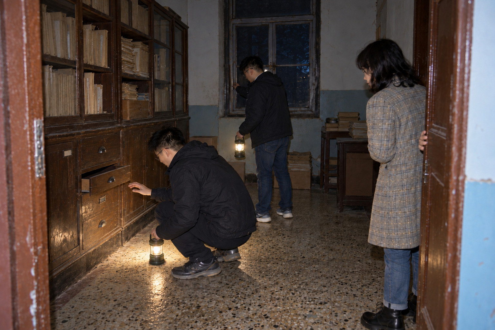
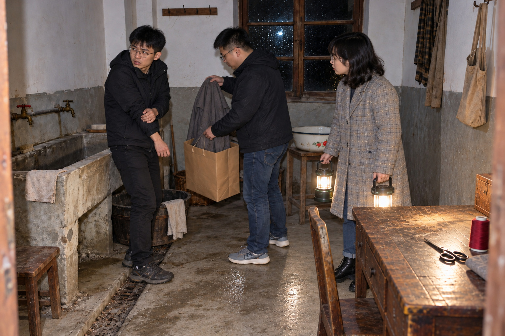
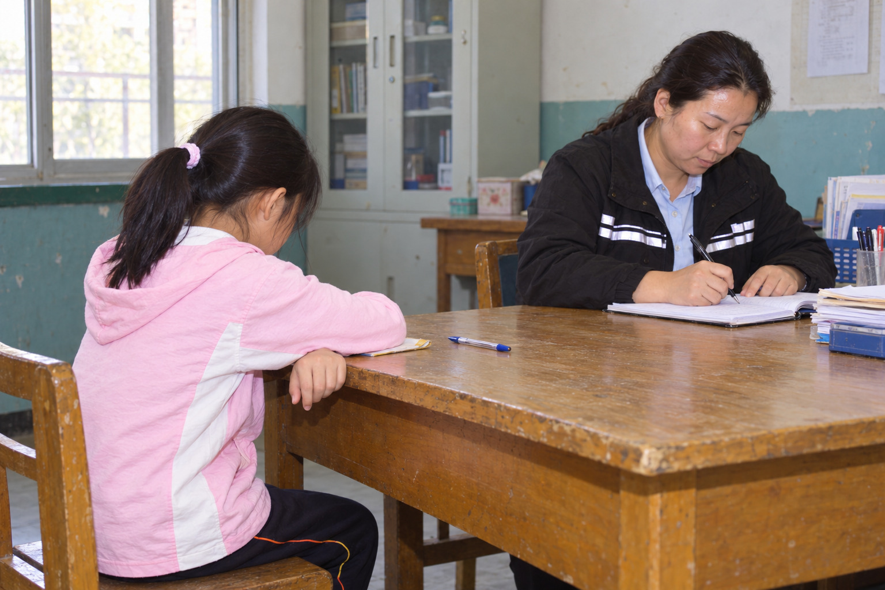

院门外

周野在车尾翻出那台旧数码相机时，雨已经顺着后备箱盖往下淌，他把相机塞进衣襟，腾出手去接欧阳澈搬来的纸箱，却先摸到一截松脱的橡皮筋。电池盖的卡扣坏了好几年，谁都劝过他换，他每回答应得很痛快，下一次拿出来仍是这台。
周野“橡皮筋又掉进去了，你拿手机替我照一下，我发誓这回回去就修电池盖，你别又拍照留证。”
欧阳澈“你上次也是这么发誓的，箱子搁车座上吧，我给你找，今晚能让我少替你按几回盖就算修过了。”
闪光灯亮起来，门柱上的“槐湾儿童之家”白得晃眼，后面的楼却没照进去。周野把屏幕递给他们，想说这地方比帖子里还旧，沈知禾已经用灯照到门牌下方，那里留着几道拆过告示的胶痕，钥匙袋里附的物业清单正好写着同一个名字。
明早拆除队进场，欧阳澈替物业登记最后一批材料，沈知禾来接学校愿意留下的生活记录，周野原本只答应搬箱子，下午却往他们的群里发了一张后勤桌照片。三个人大学时一起做过旧街摄影展，那回欧阳澈弄丢了两张底片，周野陪他将借过的包翻了一遍，直到现在，递纸的时候还会故意多报一句是谁的。
周野“十点还钥匙，出来我请面，群里现在就报吃什么，谁到了店门口才说吃过饭，下回我可不叫他。”
沈知禾“我那份照旧不要香菜，灯给我一盏，楼上没电，你俩别一进门就把两盏都拿走了。”
她将允许清点的房间圈给两人看，北侧内梯可以上楼，南楼梯的封板已经钉好。欧阳澈把进门时间写在登记夹上，顺手将笔夹到右耳，转钥匙时一只手还托着夹页，沈知禾接过去以后，他才把锁拧开。门里的潮木头气味扑得人想后退，周野却抱着箱子挤了进来，肩膀碰到门框，整扇门在三人背后轻轻颤了一下。
门厅

工作灯挂上矮柜，纸箱底下的水才显出一条细亮的边，周野蹲下来摸了一把箱底，发现还没浸进去，就将三只箱子往柜脚旁挪。欧阳澈把物业留下的标签逐张压平，刚要拍箱签，周野又举起了相机，两人对着同一张纸等了一会儿，谁也没先放下。
沈知禾“你俩是要把同一张标签拍两份吗，我这里翘着看不清，来一个人给我搭把手就行。”
周野“听见没，我负责摄影，你负责登记，今天好不容易分明白了，回去不许又把我照片全改一遍名。”
欧阳澈“我只改文件名，前提是你拍得清楚，去年那张白得连纸角都没有，我想替你改也没地方下手。”
学校、拆除队和待确认的材料各有一箱，接收联系卡夹在箱单后面，家属那栏留着司徒苗的名字。沈知禾将卡拿到灯下，翻过背面，看见铅笔写着私人物件另袋，便回头看周野已经摊开的废纸袋。
沈知禾“这袋底下有灰，信封放进去就擦不出来了，她女儿愿意接私人的，咱们找只没用过的给她。”
周野把旧袋子叠起来，找了半天才从箱底抽出一只没用过的。沈知禾小时候转过三次学校，后来想找一个旧班主任，办公室的人已经换了，连她说的是哪位老师都要重新问；今晚这张卡上至少留着一个能联系的人，她将它塞回箱单时，特意让电话号码露在外面。欧阳澈在新袋口写好“家属”，没有急着填物件名称，楼上活动室那几页还粘在柜底，得趁灯的电量足够先取下来。
活动室

北侧内梯最后一级高了一截，周野的鞋尖磕上去，箱子便向沈知禾那边偏，她伸手托住箱底，另一只手里的灯在墙上晃出一大片白。活动室的小凳子低得让人不敢坐，窗边那张折叠床却长得突兀，床脚正顶着柜门，像是临时搬进来以后就再没人挪过。
欧阳澈先看见床面上铺着白色，靠墙的一角有一条平直的折纹，他怕箱子蹭脏它，抬手让周野往旁边让。灯移近以后，白色却没了，床面凹着一块旧帆布，靠墙的边缘磨出了绒毛，那道折纹所在的位置甚至有个裂口。
周野“你让我往哪边让啊，再过去就踩你脚了，床跟箱子还隔着一截，你刚才是看见什么了？”
欧阳澈“刚才那块白布，我真看见了，你们谁再把灯移回去一下？”
他将灯退回原处，又往前照了一次，帆布仍是那样，周野站在他身后等着，没有再催他搬箱子。沈知禾试了试柜门，铰链一响，两人都回过头来，她也跟着停了一会儿，才将粘在底板上的纸连着底纸揭起。
借用簿里记着胶水盖、剪刀和蜡笔，司徒老师在乔乔那一行抱怨过一句“别给她绿色，她会把整张纸涂满”，周野读到这里才笑了一下，又往前翻，想找出纸边究竟被画成了什么。沈知禾看见他用指尖搓那块潮纸，伸手按住了他的手背。
沈知禾“我也想找那张画，可这边已经起毛了，手一搓就掉，你让我先把它带下楼吧，回去再慢慢找。”
点名纸和调整页粘在一起，一张能读出四个名字，另一张只剩床号和靠门的位置。欧阳澈把两张纸分开放好，想去拿柜外那一页领用单，周野却先把灯接了过去，光一直停在桌边，直到沈知禾开始装袋，他才跟着往服装室走，没有再把它转向折叠床。
服装室

铁柜门被衣袋顶住，只能拉开半扇，周野侧身挤进去时，塑料外皮擦过袖子，脆得像会随时裂开。桌上的搪瓷盘压着几块背面朝上的白布，欧阳澈没急着翻，先拿相机拍了盘子与袋口的位置，周野站在旁边，看见他把整张桌子都留进了画面。
周野“就是这个盘子，转帖裁掉了旁边那一大半，我看照片时还以为满桌都是红线，没想过桌子这么长。”
沈知禾“我一伸手袋子就挡住纸角了，你站到柜门外帮我扶一下，我从这边够，比从底下抽稳当。”
一块布边仍粘着暗红线，欧阳澈翻起一角，名字只剩两个能辨认的笔画，便放回去让沈知禾垫纸。湿衣袋口扎着蓝绳，收拢表里还记过一只误装的黄色杯子，周野将那一行指给她看，说自己小时候也有个摔裂了还不肯换的杯子，话说到一半，欧阳澈已经抬头望着他。
周野“你那只杯子还在我家，我洗完收柜子里了，真的，没拿来装笔，你有空自己去看。”
欧阳澈“我还没问杯子，你就都交代了，这页借你一只手，柜后这阵风一直掀纸，我拍不下来。”
库存单、湿衣表和剪裁条各自留着时间，制作登记却夹在柜门里，纸角被门缝磨出了浅色。几块布已经脱离原衣物，单独装进袋子以后，别人便看不出它们从哪儿来、后来缝到过什么上面；欧阳澈把能对应实物交接的空格留在照片背面的便记里，沈知禾将尺码清单也夹好，没有把它和姓名布签放成同一件东西。
二层寝室

寝室门脚被翘起的地胶卡住，周野用肩膀顶了一下，灯光先从门缝落进床架，窗边那张床果然没有床板。沈知禾还没走近，他已经举起相机，又想到活动室那张床，手停在按键上，转过来等她将床头柜打开。
周野“我相机都举起来了，就想拍这张空床，你们进来时有没有也愣一下，我现在有点不敢按。”
沈知禾“我也愣了一下，刚才还想问是不是搬走了，柜门开着，我蹲下去看看里面这几页。”
柜背有几道量身高的铅笔线，“成132”写在一条线旁，周野拿自己的腰比了一下，没够准，又往前站了半步。沈知禾在小事本里翻到阿成鞋后跟开线那一行，纸角还画着一只耳朵大小不一样的猫，和旁边的床号挤得很近，她将本子摊给周野看，他俯下身，终于把相机挂回肩上。
临时调整页在这里留有完整副本，原床号、新入院和夜里去处分散在几张纸上，欧阳澈看了前两页才发现自己已经忘了哪一个叫豆豆。他从包里抽出一张没印字的箱单，把四个名字抄到左边，只记名字，不动原页，照护本里的夹页还要一同保存。
欧阳澈“这纸太窄，两个宁字挤到一处了，我换张空箱单写大一点，你念的时候慢些，我怕又漏掉一行。”
床头柜里还有一只没封口的毛巾袋，袋角写着阿成，周野看见后先看了看自己的脚，刚才拿身高比着玩的那个人，原来还在等一双补好后跟的鞋。沈知禾翻到夜间照护页，他把相机留在肩上，认真听她念完四个名字，这回没有再用小名插话。
记录柜
柜锁已经被拆过，最上面一格塞满牛皮袋，周野拉出一只，报销单便沿着袋口滑成扇形，欧阳澈看见两张小页夹在中间，先托住纸，才把灯挪过来。周野等着他念叨，发现他只顾看柜位号，索性将另一只袋子也递到他手里。
周野“你看，我刚才拍床都等你开口，这回倒是你先扯了两袋，等会儿纸散了可不能都算我的。”
欧阳澈“袋口一拉开才看见线断了，我现在两只手都不敢松，你接一下左边，刚才那句记账回去再算。”
三名值班人都写过当晚的交接，字挤在页边，停用楼梯的那行旁还补了一个箭头。沈知禾将背面半句“先别让她们回寝室”翻到正面看，又翻回去，始终没找到能接上主语的地方，正要夹回袋底，周野从另一叠纸里摸出了2008年的回访摘录。
周野翻回活动室的借用簿，找到那句关于绿色的抱怨，手指落到“别给她”三个字上，过了一会儿，又往回访纸后面移。沈知禾把他刚腾空的袋子拿过来，摸了摸里侧的灰，换了一只，欧阳澈问她是不是也收学校箱，她却先去找门厅那张家属卡。
沈知禾“我小时候换学校，借来的书一还，老师什么也没让我带走，回头想找她时又说不清是哪一位。那孩子敢当面讨一句准话，我倒有点羡慕她，本子要是找着，我想亲手递给家属。”

欧阳澈去按松动的窗栓，柜子那边忽然传来一声木头磨过木头的轻响，最浅的抽屉向外滑了一截。周野已经蹲在柜脚旁，一只手刚抬到把手下面，指尖还隔着空，他望着抽屉，没把手收回来，也没接着伸进去；欧阳澈仍扶着窗栓，灯照过抽屉前那一小段空处，周野的指尖与把手之间仍隔着两指宽。
周野“你们就在门口等我，灯照脚边就好，我自己看看柜脚。”
沈知禾没有走近，把灯柄放进他伸来的手里，自己扶住门沿。柜脚下只有碎纸和落灰，周野照过一遍，仍蹲着，欧阳澈等他起身才把窗口的手放开，原本打算推回去的抽屉便留在那里，三人出门以后，沈知禾最后转身看了一眼，没有伸手关柜门。
值班室

值班室电话的外线断在墙边，欧阳澈进去以后习惯性地带门，周野便用肩膀抵住门沿，留出一掌宽的缝。沈知禾将灯放到桌上，旧电话、干笔和抄记都亮了，门后的地方却还是黑的，周野把箱子搬过来压在门边，才肯松开肩膀。
他念到“陈雨宁”时停了一下，沈知禾在另一页又写了豆豆，翻到称呼对照才发现多出一行。她划掉那一行，纸都没等墨干就往灯下推，欧阳澈伸手压住纸角，周野却先笑了，声音比在活动室大了些。
沈知禾“这一行我写重了，刚才光顾听你们说，手还在往下抄，我得划掉，省得回去连自己都认不出。”
周野“原来你也会看岔，我刚才憋着没敢问，越听你们念全名越糊涂，还怕一开口又让你笑我。”
欧阳澈“没人笑你，我刚才也念停了，这张是咱们写的，划一下就行，原本我给她另外垫在下面了。”
两条腕带抄记摊在桌上，名字、位置、缝制时间各占一栏，欧阳澈将照片背面的便记翻过来，发现自己已经写到纸边。沈知禾递给他另一张，周野挪开搪瓷杯，才腾出一块能写字的地方，杯底在木桌上擦出一声轻响。
欧阳澈“这张背面也写满了，给我换一张吧，我都开始在纸边挤字了，回去自己看不懂又得来找你们。”
周野拿了杯里一支笔，想替欧阳澈记另一行，笔尖在纸上来回走，只留下浅灰划痕，他试完四支，才向欧阳澈摊开手。欧阳澈把耳边的笔递给他，自己去看门缝，箱子还好好挡在那里，他却又用鞋尖抵了一下。
洗衣房

洗衣房的地面没有门厅那么湿，沟口却塞着厚灰，周野进来先看了衣架，没有立刻去搬。沈知禾从针线柜里拿出领用簿，月份一页页往前翻，三月和五月的纸边已经被手磨软，欧阳澈将返工便条从针线盒下抽出来，连着白布边的一小段线也跟着拖到桌上。
周野“这个‘乔’我越看越像她写的，她连老师的字都敢改，我忍不住想知道这回是不是也留了一笔。”
沈知禾“我也认了半天，后面这一点泡在水印里，怎么侧着灯都看不清，心里想认成她也没用。”
她说完仍望着那个字，周野等了一会儿，替她把袋口撑开。欧阳澈将日常簿和次日清点放在便条旁，纸上的粗红线早在事故前就领过，桌边这一段却从返工的旧针脚里剪下来，他拍完三份纸，没有再让相机只对着那团线。
周野去取衣架上的灰外套，袖口擦过手腕，布料又硬又冷，接触过的那一小块皮肤却慢慢热起来，像刚有一只装着热水的杯子挪开。他想把外套抖直，手举到一半便停住，衣架在指间转了个方向，冷袖子又落到同一处，热意没有往旁边散。
周野“袋口撑住就行，我不想再拿着这件了，你们谁接一下？”
欧阳澈把袋子拿过去，周野等袖口彻底离开手腕才松开衣架，随后攥住自己的袖口，望着靠门的那一边，连拿相机都换了另一只手。沈知禾装好那件外套，在袋口留着待确认的位置，原来想让他再拿一盏灯，话到嘴边却收住了，自己一手接一盏，将灯提到他身边，没有再让他拿东西。

南楼梯

南楼梯的封板是拆除准备时新钉的，墙缝里的旧灰却已经结成暗色，周野在平台上站住，没有再往前挤。沈知禾提着两盏灯，其中一盏的光被封板截断，另一盏照着他藏在袖子里的手，他说自己可以接，她没递过去，只让他靠着有光的墙边站。
图上画的是平日房间之间的连通，水位简记与停用页却各放在另一只袋里，欧阳澈摆开三张纸，周野将钥匙登记也推过来，先前没看仔细的19:18正好露在最上面。楼梯下面传上来一点空响，他抬头等了等，发现欧阳澈也没继续翻纸，又低头把钥匙那页按平。
周野“下面那一声你们也听见了吧，我刚才没动，鞋底一直没离开这块地。”
欧阳澈“我听见了，你先别过去，我也看不到下面，咱们站这边说话，灯照得到的地方就这么大。”
送衣推车条尾端沾着泥，“太滑”下面画了两道线，沈知禾读到这里，想起鞋柜里阿成那只没缝好的后跟，眼睛便落到周野鞋上。他湿鞋带的两头都拖在地上，刚才一路走来谁也没顾上，欧阳澈将图接稳以后，沈知禾把灯放低了一点。
沈知禾“鞋带的两头都拖到地上了，你蹲下系一下吧，我把灯压低，刚才搬箱子时我就想跟你说。”
周野蹲下去系鞋带，没有说自己怕不怕，起身后却靠近了灯照着的那一侧。物业清单还要附旧楼通道，欧阳澈不愿把平日的连通图照抄过去，给当晚的撤离线另留了一张薄纸。周野已经收起钥匙登记，又翻出来放在图旁，楼梯下面没有第二声响，他却每次开口都先等两人答应，今夜他们仍从进来时的北侧内梯返回。
事故补记
三人沿北侧内梯将材料搬回门厅，灯重新挂在矮柜上，正式报告平整得像刚从另一只袋里拿出来，手写补页却有不同深浅的水痕，欧阳澈读到“转移前完成二次核对，登记无误”，手指留在那一行，翻了翻背面，才把邹雪梅的当晚交接推到旁边。
周野“她当时那么不肯走，非得看老师写完，我还以为到了体育馆就不怕再弄错了。可你看报告只剩这一行，后面有人翻到她的名字，哪知道她在桌边等过，她问过的话一个字也没留下。”
沈知禾看着司徒琴的补记，读到她承认是自己拿反了底带，又往下找乔乔的名字。先前那张老师没掀开孩子胳膊的回访纸还夹在她手里，两页放到一处以后，她才将刚才压得太紧的手指松开，水痕上留下了一点指腹的亮。
欧阳澈“我给打印的那份多夹一页，原订线不动，回去谁来翻，至少不用跟咱们一样找第二只袋子。”
周野还想问谁没让补记装进去，装订条却只记正文在第三天下午打印，没有写司徒琴那天几点交来。他用指甲沿纸背摸了一遍，没摸到第二张签收页，便将两份纸一起递给欧阳澈，没有把刚才的问题写进清单。
沈知禾“她问‘写了吗’那张我还攥着呢，刚才有个角差点压进订线，你给我腾一点，我想把它放在上面。”
欧阳澈在自己的清点便记上写了“登记无误”，笔还没放下，又将这四个字划掉，改记“两条位置底带曾订正”，在经手栏签了自己的名字。他放好附页，又将体育馆接收页摊在最上面，四个名字旁边都有第二次核对记录。周野拿过袋子，原先怕碰碎纸的手这回放得很平，等沈知禾将最后一角塞进去，才沿着旧折痕合上袋口。
把名字还回去
桌边还留着三张论坛打印件，后勤桌的照片出现了两次，周野一眼认出自己发到群里的那张，手已经伸过去，看到另一张下面多出的字，又将手放回桌沿。他把两页挪到一起，照片下沿对齐，上面一个标题问红线，另一个只写旧院清点。
周野“我发完就觉得这事跟我没关系了，链接点不开，往上划两下也就过去了。去年展签写错，我还跟你争谁把底片弄丢的，现在连原帖都没看过，就让你们一起跟着我猜。”
欧阳澈“照片我今晚发你，原页也一起，你写完给我看一眼，去年咱俩改展签不也是这么来回折腾的。”
匿名回复夹在最后，自称旧值夜的人说孩子都去了体育馆，可账号已经注销，附件栏里什么也没有。沈知禾找了找帖尾的地址，欧阳澈已经把当晚的交接拿到周野面前，周野却还看着自己发到群里的裁图。两年前有人在下面回复过，他当时只觉得帖子旧，今晚才想起自己连那人的话也没有往下读完。
原袋内页 · 家属接收件
退封、本子与家属说明分别摊在桌上，袋口的细绳还没有系回去
牛皮袋外层露着练字本的封角，周野看见黄胶带，先想把翘起的边压回去，手指刚落下，沈知禾便将退封里的便笺递给他。他读到“别换”，把本子往旁边移了一点，让那一角离开袋子的折边，封面上两个挨在一起的字便都露出来了。
周野“她后来有没有来拿，我看信和本子放在一袋，还以为老师早收到了，现在连这句话都不敢先说。”
沈知禾没有立即答，信封一角压在本子底下，细绳又绕过了便笺，她从旧结处慢慢松开，才把几件东西分开。欧阳澈将网页打印件移到桌角，原袋里掉出一张家属说明，周野伸手接住，连同转交签放回本子旁边。
那一晚

18:12以后，门厅的水逐渐往里漫，湿衣拢进袋子，姓名布签剪下来另放，干衣按库存尺码送到二层。活动室里仍有几件不合身的袖子，腕带上的姓名布签属于本人，位置底带却出现了两处不对应，乔乔的提醒让换衣桌边停下了两名孩子，递来的临调页被放到桌上，旧针脚随后拆掉重缝。
南楼梯在19:16停止通行，后门钥匙两分钟后借出，到19:20的补页才第一次直接写着通道已开。洗衣房的推车先移到坡道外，孩子从后勤内梯下来，沿内侧靠墙经过车让出的地方，到了体育馆还要再点一次名，接收页上，乔晚宁、林小满、陈雨宁和贺成安都留下了复核记录。

体育馆里，湿鞋沿墙根摆着，点名的人要等孩子应了才往下念，黄色杯子也回到豆豆手里。周野看完那一页，在“均有第二次核对记录”下面停了一会儿，沈知禾收纸时，他却指着名字让她等等，又从头念了一遍，这一次没把豆豆另算成一个人。

家属袋摊在桌上，周野将本子装进去，退封留在旁边，便笺里“替我留到过年”那一行朝着灯。他原先只想知道2015年的收件人是谁，读到同学都叫她小乔，才低头去看封面上的名字，原来她后来自己也会向别人解释那个字，写这张信的时候，还想回来认一认老师留下的旧本子。
沈知禾翻开原袋里的家属说明，周野看见2022年，手仍停在本子的封角，刚才想问老师住在哪里的话便没接下去。欧阳澈将退封放回原袋，里面那句“回我一个字就行”不再露着，袋口一合，它仍和寄出去时折在同一个地方，老师那张留本的便记则另放在本子旁。
周野“她女儿来拿的时候，我能不能也在，我把袋子送到门口，别让她再到那几个箱子里找。这角再压一下就要断了，刚才我还想着拿胶带绕一圈，封得结实点，现在又怕她拆开认不出了。”
沈知禾“我明早联系她，你要来我就等你，袋口留我的号码，她过来以后也不用在拆除队那边一箱箱找。”
欧阳澈拿出手机记好接收人的电话，原来用来记房间顺序的那张纸翻到背面，补上明早先联系家属。周野将学校箱搬回门厅，欧阳澈依物业清单检查窗栓和洗衣房后门，把后门锁好，再沿北侧内梯回到进来时的铁门，沈知禾提着两盏工作灯等在门外，家属袋始终留在她手里。
离开

雨停以后，车尾下面仍滴着水，周野将学校接收箱推进去，沈知禾没把家属袋叠在上面，先在靠座椅的一侧试了试，确认不会被箱角压住，才把袋口朝外放稳。欧阳澈重新封好钥匙袋，刚才夹在耳边的笔已经扣回登记夹上，他绕到车顶取夹页，发现一角挂进了塑料扣，便低头慢慢理平。
周野“更正我贴在原来那条下面，我发过的链接还在群里，光删掉没人知道怎么回事，你们看完我再发。”
沈知禾“原交接我给你拍，私信我想再问问她女儿，刚才装袋都不敢多翻，放上网就更不好收回来了。”
欧阳澈翻到说明页背面，明早联系家属的号码下面多了一行蓝黑字，纸边没有水痕，经手人的一栏却空着。他记得自己只写过电话号码，手机亮起来时，那行字里的21:57正好也出现在屏幕上，扣在登记夹侧面的笔帽仍没有打开。
欧阳澈“你们谁写了这行，告诉我一声，我还能在旁边补上经手人，别现在逗我。”
周野从车门那边走过来，沈知禾也低头看了，两人都摇头，欧阳澈便把夹页合上，没有添名字。三个人谁也没提议回去找，院门的锁已经扣好，沈知禾直到坐进车里才关灯，车内一下暗下来，家属袋上的电话仍能借着手机看清。
周野本来在找面店的位置，手指停在聊天框里，问沈知禾明早联系上以后能不能也告诉自己一声。她说会的，又把刚才留在车座上的退封收好，信封背面仍写着“以后找到老师，再交给她”，周野替她腾出膝上的地方，看着那张纸照原来的折痕放回去。
周野“明早你给我打电话，我开车来，袋子放你那儿，先别寄，咱们把她女儿约好再送过去。”
沈知禾“好，你别又睡过头，我先联系她，再问问能不能找到小乔，这本原来是替她留的，还得听听她怎么说。”
欧阳澈把拆除队的地址从导航里退出来，问他们面还吃不吃，周野这才把下午答应的店名发进群。沈知禾靠着车窗又看了一遍便笺，读到“回我一个字就行”，没有再往下翻，车开出院门时，她将信封合好，放在练字本旁边，两个挨在一起的名字都留在原来的封面上。